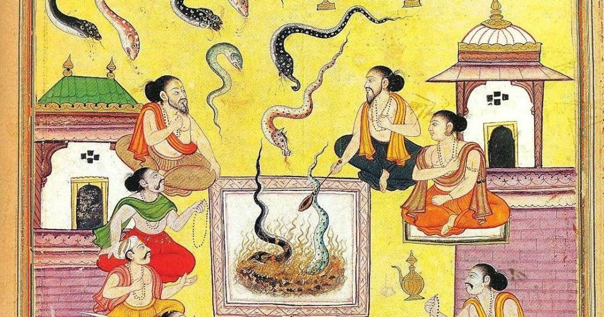
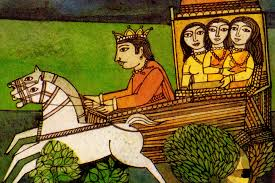

📖 अध्याय 1: आदिपर्व
आदिपर्व महाभारत का पहला अध्याय है, जिसमें कौरवों और पांडवों की वंशावली, जन्म, शिक्षा, विवाह, और प्रारंभिक संघर्षों का विस्तार से वर्णन है। इसमें लगभग 227 उपखंड (अध्याय) और हजारों श्लोक शामिल हैं।
🔹 मुख्य विषय:
- सूत जी द्वारा कथा का आरंभ
- राजा जनमेजय का सर्प यज्ञ (सर्पसत्र)
- राजा शांतनु और गंगा की कथा
- भीष्म का जन्म और उनकी प्रतिज्ञा
- सत्यवती, वेदव्यास और विचित्रवीर्य की कथा
- अंबा, अंबिका और अंबालिका की कथा
- धृतराष्ट्र, पांडु और विदुर का जन्म
- पांडवों और कौरवों का पालन-पोषण
- लाक्षागृह, वनवास और द्रौपदी स्वयंवर
📜 सूतजी द्वारा कथा की भूमिका
सभी ऋषि-मुनि, ज्ञानी और श्रोताओं को प्रणाम करते हुए, सूतजी — जो एक महान कथावाचक और पुराणों के ज्ञाता थे — ने महाभारत की कथा का प्रारंभ किया। यह घटना नैमिषारण्य तीर्थ में हुई थी, जहाँ अनेक मुनिगण हजारों वर्षों तक यज्ञ कर रहे थे। इन ऋषियों का नेतृत्व कर रहे थे — ऋषि शौनक
ऋषियों ने सूतजी से निवेदन किया, “हे सूत! आप वेदों, पुराणों और इतिहासों के पूर्ण ज्ञाता हैं। कृपया हमें वह पवित्र कथा सुनाएँ, जो मानव जीवन को धर्म, सत्य और कर्तव्य का मार्ग दिखाए। हम जानना चाहते हैं – वह महाकाव्य जिसे भगवान व्यास ने स्वयं रचा। वह कथा जो केवल युद्ध की नहीं, बल्कि मानवता की, आत्मा की, और मोक्ष के मार्ग की है।”
सूतजी ने आदरपूर्वक हाथ जोड़कर उत्तर दिया — “हे ऋषियों! आपने मुझ पर जो विश्वास किया है, मैं कृतज्ञ हूँ। यह कथा कोई साधारण कथा नहीं है। यह है 'महाभारतम्', जिसे श्रीकृष्णद्वैपायन वेदव्यास ने लिखा है। यह ज्ञान, नीति, धर्म, और जीवन के सभी पक्षों को समेटे हुए ग्रंथ है। इसके हर श्लोक में ब्रह्मा, विष्णु और महेश की ऊर्जा है। यह धर्म की विजय की अमरगाथा है।”
सूतजी बताते हैं कि कैसे व्यासजी ने इस कथा को दिव्यदृष्टि से देखा और उसे गणेशजी से लिखवाया। गणेशजी ने एक शर्त रखी — “यदि आपकी वाणी बिना रुके बहती रहे, तभी मैं इसे लिखूंगा।” व्यासजी ने भी शर्त रखी — “आप बिना अर्थ समझे कुछ भी नहीं लिखेंगे।” इस प्रकार, यह दिव्य संवाद एक अद्भुत ग्रंथ का रूप ले बैठा।
महाभारत केवल युद्ध का ग्रंथ नहीं है। यह आदर्शों, संबंधों, नीति, राजनीति, प्रेम, त्याग, और मोक्ष का मार्ग है। इसमें हम देखेंगे —
- देवताओं और मनुष्यों के संघर्ष
- कुलों का पतन और उत्थान
- राजाओं की परीक्षा
- स्त्रियों का सम्मान
- और सबसे बढ़कर, श्रीकृष्ण की लीला — जो समस्त संसार का संचालन करते हैं।
देवताओं और मनुष्यों के संघर्ष
कुलों का पतन और उत्थान
राजाओं की परीक्षा
स्त्रियों का सम्मान
और सबसे बढ़कर, श्रीकृष्ण की लीला — जो समस्त संसार का संचालन करते हैं।
सूतजी कहते हैं, “जो व्यक्ति इस कथा को श्रद्धा से सुनता है, पढ़ता है, या स्मरण करता है — उसके पाप नष्ट हो जाते हैं, चित्त शुद्ध हो जाता है, और वह आत्मज्ञान की ओर अग्रसर होता है।”
“इसीलिए, मैं अब आरंभ करता हूँ —
जय श्रीकृष्ण, जय व्यासमुनि, जय धर्म की विजय।”
🐍 सर्पसत्र कथा - राजा जनमेजय
महाभारत युद्ध के बाद वर्षों बीत चुके थे। कुरु वंश की कई पीढ़ियाँ आगे बढ़ीं। उन्हीं में एक तेजस्वी राजा हुए — राजा जनमेजय, जो पार्थ (अर्जुन) के पुत्र अभिमन्यु के पुत्र परिक्षित के पुत्र थे।
उनके पिता परिक्षित को तक्षक नामक नाग ने विष देकर मार दिया था। इसी घटना से प्रेरित होकर जनमेजय ने "सर्प यज्ञ" (सर्पसत्र) का आयोजन किया, जिसमें सभी नागों का विनाश करना तय हुआ।
कथा की शुरुआत
एक बार परिक्षित जंगल में शिकार करते समय प्यासे हुए। उन्होंने एक ऋषि शमीक का आश्रम देखा और पानी माँगा, परंतु ऋषि ध्यानमग्न थे। परिक्षित ने क्रोधित होकर ऋषि के गले में मरा साँप डाल दिया।
यह बात ऋषि के पुत्र श्रृंगी को ज्ञात हुई, जिसने क्रोध में आकर श्राप दिया — “राजा परिक्षित को सातवें दिन तक्षक नाग डसेगा।”
ठीक सातवें दिन, तक्षक ने किले की रक्षा भेदकर परिक्षित को डस लिया। राजा का अंत हो गया।
राजा जनमेजय की प्रतिज्ञा
जब राजा जनमेजय को यह पता चला कि उनके पिता की मृत्यु तक्षक नाग के कारण हुई, तो वे अत्यंत दुखी और क्रोधित हुए।
उन्होंने प्रतिज्ञा की — "मैं सभी नागों का विनाश करूँगा। कोई नाग इस पृथ्वी पर जीवित नहीं रहेगा।"
यज्ञ की शुरुआत
जनमेजय ने अपने पुरोहित उत्तंक, ऋत्विज शौनक, और अनेक ब्राह्मणों की सहायता से विशाल यज्ञ आरंभ किया।
विशाल हवनकुंड तैयार हुआ, और यज्ञ में ऐसा मन्त्रोच्चार हुआ कि दूर-दूर के नाग जलते हुए यज्ञकुंड में गिरने लगे।
तक्षक का भागना
तक्षक नाग, जो इस यज्ञ का मुख्य उद्देश्य था, इंद्र का भक्त था। उसने इंद्र से रक्षा की प्रार्थना की।
इंद्र ने उसे अपने सिंहासन के नीचे छिपा लिया।
लेकिन जनमेजय ने विशेष मंत्रों से तक्षक सहित इंद्र को भी यज्ञकुंड में खींचने का आदेश दे दिया।
आस्तिक का आगमन
तभी एक बाल ब्राह्मण आस्तिक (मानव ऋषि और नाग कन्या मनसा के पुत्र) यज्ञस्थल पर आया।
वह आधा मानव, आधा नाग था और सभी नागों का हितैषी था।
आस्तिक ने यज्ञ को रोका और जनमेजय से कहा: “हे राजन्! आप धर्मात्मा हैं, कृपया यह यज्ञ रोक दें। सभी नागों का नाश अधर्म होगा। सभी नाग एक जैसे नहीं हैं।”
जनमेजय की दुविधा
राजा पहले असहमत थे, लेकिन आस्तिक के ज्ञान और शिष्ट भाषण से प्रभावित हुए।
आस्तिक ने यज्ञ रोकने पर वर माँगने का अवसर माँगा — और वर के रूप में सर्पसत्र को रोकने की माँग की।
यज्ञ का समापन
राजा जनमेजय ने अंततः यज्ञ रोका।
तक्षक नाग की रक्षा हो गई, और अन्य नाग भी यज्ञकुंड में गिरने से बच गए।
आस्तिक को आशीर्वाद मिला और नाग जाति का अस्तित्व बच गया।
प्रतीकात्मक अर्थ
- युद्ध और बदले की अग्नि भी अंधकार ला सकती है।
- धर्म अधर्म में बदल सकता है यदि वह करुणा और विवेक से वंचित हो।
- शांति और संवाद से बड़े संकट टाले जा सकते हैं।
प्रतीकात्मक अर्थ
युद्ध और बदले की अग्नि भी अंधकार ला सकती है।
धर्म अधर्म में बदल सकता है यदि वह करुणा और विवेक से वंचित हो।
शांति और संवाद से बड़े संकट टाले जा सकते हैं।
कथा का महत्व
महाभारत की कथा इसी सर्पसत्र से प्रारंभ होती है।
सूतजी ने नैमिषारण्य में यह कथा सुनाई, और यहीं से ‘महाभारत’ की सम्पूर्ण गाथा प्रारंभ होती है।
राजा शांतनु और गंगा की कथा
शांतनु - धर्म का प्रतीक
हस्तिनापुर का सिंहासन एक ऐसे सम्राट के अधीन था, जिनका नाम सुनते ही प्रजा के हृदय श्रद्धा से झुक जाते — राजा शांतनु। उनके पिता राजा प्रतीप थे और उन्होंने शांतनु को धर्म, सत्य, करुणा और युद्धकला का अद्वितीय ज्ञान दिया था।
राजा शांतनु प्रतिदिन प्रातः गंगा स्नान को जाते। उनका मन नदियों की निर्मलता और वनों की शांति में रमण करता था। उनका सौम्य और न्यायप्रिय स्वभाव प्रजा के लिए वरदान था।
गंगा से प्रथम मिलन
एक दिन, गंगा के तट पर वह दिव्य क्षण आया। शांतनु ने एक अलौकिक स्त्री को देखा — दिव्य तेज से दीप्त, स्वर्णिम किरणों जैसी आँखें, और चलने मात्र से वातावरण में मधुरता फैल जाए।
वह थीं देवी गंगा। राजा का हृदय पहली ही दृष्टि में मोहित हो गया। उन्होंने विवाह का प्रस्ताव रखा। गंगा ने मंद मुस्कान के साथ उत्तर दिया:
"हे राजन! मैं तुम्हारे संग विवाह करूँगी, यदि तुम मुझसे कभी कोई प्रश्न न पूछो, मेरे किसी कार्य में हस्तक्षेप न करो।"
प्रेम में डूबे शांतनु ने शर्त स्वीकार कर ली।
सात पुत्रों का जन्म और गंगा का रहस्य
समय बीता। गंगा ने एक के बाद एक सात पुत्रों को जन्म दिया, लेकिन जैसे ही वे जन्म लेते, वह उन्हें गंगा नदी में बहा देतीं।
राजा के हृदय में वेदना होती, किंतु वचन के कारण मौन रहते। प्रेम और धर्म — इन दोनों के बीच उनका संघर्ष गहराता रहा।
आठवाँ पुत्र और राजधर्म का द्वंद्व
जब आठवाँ पुत्र जन्मा और गंगा उसे भी बहाने चलीं, तो राजा के धैर्य का बाँध टूट गया।
"हे देवी! क्या तुम्हें मातृत्व का भी कोई बोध नहीं? सात पुत्रों को मार दिया और अब आठवें को भी?"
गंगा मुस्कराईं।
"हे राजन! तुमने मेरा व्रत तोड़ा, अब मैं जा रही हूँ। परंतु सत्य बताना आवश्यक है।"
वसुओं का श्राप और गंगा का रहस्य
"वे सातों पुत्र कोई सामान्य बालक नहीं थे, वे थे 'अष्ट वसु' — देवलोक के वासी। उन्होंने ऋषि वशिष्ठ की कामधेनु चुराई थी, इसलिए श्राप मिला कि वे धरती पर जन्म लेंगे।
मैंने उन्हें जन्म देकर तुरंत जल में प्रवाहित किया, ताकि वे शीघ्र मुक्त हो जाएँ। आठवाँ वसु, ‘द्यौ’, प्रमुख दोषी था — उसे मानव जीवन पूरा जीना होगा।"
"मैं अब उसे शिक्षा के लिए ले जाती हूँ, समय आने पर उसे सौंप दूँगी।"
गंगा अंतर्ध्यान हो गईं।
देवव्रत की शिक्षा और तेज
गंगा अपने पुत्र को लेकर ब्रह्मलोक, तपोवन और आकाशीय आश्रमों में गईं। वहाँ उसे महान ऋषियों से शिक्षा मिली — वशिष्ठ, परशुराम, बृहस्पति, शुकदेव।
उस बालक ने वेद, शस्त्र, धर्म, नीति और युद्ध विद्या में अद्भुत निपुणता प्राप्त की।
उसका नाम था देवव्रत।
ऋषि कहते — "यह बालक तो देवों में भी श्रेष्ठ होगा।"
सत्यवती और राजा का मोह
इधर, शांतनु अपने अकेलेपन में डूबे थे। एक दिन यमुना किनारे एक सुंदर कन्या को देखा — मछुआरों की पुत्री, नाविका — सत्यवती।
राजा का हृदय फिर से प्रेम में बह निकला। उन्होंने विवाह प्रस्ताव रखा।
सत्यवती के पिता ने कहा:
"विवाह तब ही होगा, जब सत्यवती का पुत्र ही उत्तराधिकारी बने।"
राजा दुखी होकर लौट आए — उनके मन में धर्म (वचन) और प्रेम (प्रेमिका) के बीच असहनीय द्वंद्व था।
भीष्म प्रतिज्ञा
नैमिषारण्य में जब ऋषि-मुनियों ने सूतजी से यह पूछा कि कुरुवंश की जड़ में कौन-सा त्याग और धर्म निहित है, तब सूतजी ने शांत होकर कहा—
हे मुनियों! सुनो वह प्रसंग, जहाँ धर्म की पराकाष्ठा स्वयं एक राजपुत्र ने की थी। जब शांतनु राजा ने सत्यवती से विवाह की इच्छा की, और उसके पिता ने कहा कि उसका पुत्र ही राजा बनेगा, तब यह संकट उत्पन्न हुआ।
देवव्रत को यह ज्ञात हुआ कि पिताश्री की इच्छा अधूरी रह जाएगी। उन्होंने तुरंत निश्चय किया और गंगा के तट पर, सप्तर्षियों और मछुआरे के समक्ष, यह महान प्रतिज्ञा की —
“मैं आजीवन ब्रह्मचारी रहूँगा, विवाह नहीं करूँगा, और हस्तिनापुर के सिंहासन पर कभी नहीं बैठूँगा।”
“मैं आजीवन ब्रह्मचारी रहूँगा, विवाह नहीं करूँगा, और हस्तिनापुर के सिंहासन पर कभी नहीं बैठूँगा।”
उस क्षण आकाश से देवताओं ने पुष्पवर्षा की। स्वर्गलोक से घोष हुआ — “भीष्म! तुमने जो प्रतिज्ञा की है, वह भीषण है, अतः आज से तुम 'भीष्म' कहलाओगे।”

शांतनु ने हर्ष और संतोष में आकर वरदान दिया — “हे पुत्र! जब तक तुम स्वयं न चाहो, मृत्यु तुम्हारे पास न आ सके।”
ऐसा था वह क्षण, जब धर्म, व्रत और त्याग का संगम हुआ। यह महाभारत की नींव थी, जहाँ एक पुत्र ने पिता के प्रेम में अपना जीवन अर्पित कर दिया।
शिक्षा
- त्याग की पराकाष्ठा भीष्म के जीवन में परिलक्षित होती है।
- वचन पालन और धर्म के लिए जीवन बलिदान देना ही क्षात्र धर्म है।
- भीष्म प्रतिज्ञा केवल एक प्रण नहीं, एक संपूर्ण धर्मशास्त्र बन गई।
नाहं राज्यम् न कामानां सुखानां वा पुनः पुनः।
ब्रह्मचर्यम् अहं स्वीकृतम् पिता मे प्रीयतां सदा॥
नाहं राज्यम् न कामानां सुखानां वा पुनः पुनः।
ब्रह्मचर्यम् अहं स्वीकृतम् पिता मे प्रीयतां सदा॥
अर्थ: "न मुझे राज्य चाहिए, न सुख-भोग। मैंने ब्रह्मचर्य को स्वीकार किया है — पिता की प्रसन्नता ही मेरे लिए सर्वोपरि है।"
हे मुनियों! इस प्रकार देवव्रत से भीष्म हुए, और महाभारत का इतिहास, त्याग और धर्म की स्याही से लिखा जाने लगा।
अंबा, अंबिका और अंबालिका की कथा
भीष्म का काशी से कन्याओं को लाना
काशी नरेश ने अपनी तीन पुत्रियों — अंबा, अंबिका और अंबालिका — के स्वयंवर में कुरुवंश को आमंत्रित नहीं किया। यह अपमानजनक जानकर भीष्म वहाँ पहुँचे और युद्ध कर तीनों कन्याओं को जीत कर हस्तिनापुर ले आए, ताकि वे विचित्रवीर्य से विवाह कर सकें।
अंबा का प्रेम और संघर्ष
अंबा ने बताया कि वह पहले ही शाल्वराज से प्रेम करती है। भीष्म ने उसे लौटने दिया, पर शाल्वराज ने उसे अस्वीकार कर दिया। अंबा वापस भीष्म के पास गई, पर उन्होंने अपनी ब्रह्मचर्य प्रतिज्ञा के कारण विवाह से मना कर दिया।
अंबा की प्रतिज्ञा
अपमानित और आहत अंबा ने तपस्या की और भगवान शिव से वर माँगा कि वह अगले जन्म में भीष्म का वध कर सके। वह आगे चलकर शिखंडी के रूप में जन्मी और भीष्म के अंत का कारण बनी।
अंबिका और अंबालिका का विवाह
शेष दो बहनें — अंबिका और अंबालिका — ने विचित्रवीर्य से विवाह किया। किन्तु विचित्रवीर्य संतान उत्पन्न किए बिना अल्पायु में ही मृत्यु को प्राप्त हुए।
शिक्षा:
- बलपूर्वक लिया गया निर्णय भविष्य में संकट ला सकता है।
- प्रतिज्ञा और प्रेम के टकराव से त्रासदियाँ जन्म लेती हैं।
- एक स्त्री का अपमान युगों तक विनाश का कारण बन सकता है।
बलपूर्वक लिया गया निर्णय भविष्य में संकट ला सकता है।
प्रतिज्ञा और प्रेम के टकराव से त्रासदियाँ जन्म लेती हैं।
एक स्त्री का अपमान युगों तक विनाश का कारण बन सकता है।
"शपथ और अपमान दोनों ही नारी को चीरते हैं — और एक नारी का क्रोध इतिहास की दिशा बदल सकता है।"
📘 वेदव्यास और विचित्रवीर्य की कथा
वेदव्यास का जन्म और उद्देश्य
महर्षि पराशर और सत्यवती के संयोग से एक तेजस्वी पुत्र का जन्म हुआ — वेदव्यास। जन्म लेते ही वे तपस्या के लिए वन चले गए। वेदव्यास ब्रह्मज्ञान, वेद, पुराण और महाकाव्य रचने की दिव्य शक्ति से युक्त थे। उन्होंने ही आगे चलकर महाभारत की रचना की और उसे गणेशजी से लिखवाया।
विचित्रवीर्य का राज्य और मृत्यु
महाराज शांतनु और सत्यवती के छोटे पुत्र थे — विचित्रवीर्य। बड़े भाई चित्रांगद की मृत्यु के बाद वे हस्तिनापुर के राजा बने। भीष्म ने उनके विवाह के लिए कासी नरेश की तीन कन्याएँ — अंबा, अंबिका और अंबालिका को स्वयंबर से लाकर विवाह करवाया।
परंतु राजा विचित्रवीर्य का स्वास्थ्य दुर्बल था। वे कुछ ही वर्षों में निःसंतान ही मृत्यु को प्राप्त हुए। उनके मरने से कुरुवंश पर संकट आ गया।
वंश की रक्षा हेतु वेदव्यास का आह्वान
तब माता सत्यवती ने नियोग परंपरा के अनुसार अपने पहले पुत्र वेदव्यास को बुलाया। वेदव्यास ने अंबिका और अंबालिका से नियोग के द्वारा संतान उत्पन्न की:
- अंबिका से जन्मे धृतराष्ट्र, जो जन्म से अंधे थे।
- अंबालिका से जन्मे पांडु, जो तेजस्वी और धर्मात्मा थे।
- दासी से जन्मे विदुर, जो धर्म और नीति के महान ज्ञाता बने।
अंबिका से जन्मे धृतराष्ट्र, जो जन्म से अंधे थे।
अंबालिका से जन्मे पांडु, जो तेजस्वी और धर्मात्मा थे।
दासी से जन्मे विदुर, जो धर्म और नीति के महान ज्ञाता बने।
📖 धृतराष्ट्र, पांडु और विदुर का जन्म
विचित्रवीर्य की मृत्यु के बाद, हस्तिनापुर का राजवंश संतानविहीन हो गया। तब माता सत्यवती ने अपने पहले पुत्र महर्षि वेदव्यास को बुलवाया, जिन्हें उन्होंने ब्रह्मर्षि पराशर से प्राप्त किया था।
वेदव्यास ने नियोग परंपरा के अनुसार विचित्रवीर्य की रानियों से संतान उत्पन्न करने की सहमति दी।
अंबिका से धृतराष्ट्र
सर्वप्रथम, अंबिका को वेदव्यास के पास भेजा गया। वेदव्यास के तेज को देखकर वह भयभीत हो गई और आँखें बंद कर लीं।
परिणाम: एक पुत्र उत्पन्न हुआ जो जन्म से ही नेत्रहीन था — वही था धृतराष्ट्र।
अंबालिका से पांडु
दूसरे दिन अंबालिका को भेजा गया। वह भी भयभीत हो गई और उसका चेहरा पीला पड़ गया।
परिणाम: उसका पुत्र पांडु (जिसका अर्थ है “पीला”) जन्म से ही कमजोर था।
दासी से विदुर
अब सत्यवती ने रानियों की एक दासी को भेजा, जो पूर्ण समर्पित और निडर थी।
परिणाम: उत्पन्न हुआ विदुर, जो अत्यंत बुद्धिमान, धर्मशील और न्यायप्रिय था। परंतु चूंकि वह दासीपुत्र था, इसलिए उसे सिंहासन का अधिकारी नहीं बनाया गया।
🕊️ शिक्षा:
- केवल जन्म नहीं, धैर्य, भक्ति और भाव ही श्रेष्ठ संतान का निर्माण करते हैं।
- नियोग की प्रथा, समाज की आवश्यकता थी — परंतु उससे जुड़ी भावनाएँ ही भविष्य कोतय करती थीं।
- विदुर का जन्म बताता है कि नीच कुल में जन्म लेकर भी कोई महाज्ञानी और महात्मा बन सकता है।
📖 पांडवों और कौरवों का पालन-पोषण
धृतराष्ट्र ने गांधारी से विवाह किया, जिनकी आँखों पर आजीवन पट्टी बंधी रही। उन्होंने सौ पुत्रों को जन्म दिया, जो कौरव कहलाए। सबसे बड़ा था दुर्योधन।
उधर, पांडु ने कुन्ती और माद्री से पांच पुत्रों को प्राप्त किया, जिन्हें देवताओं से वरदान द्वारा प्राप्त किया गया था। वे थे:
- युधिष्ठिर – धर्मराज, धर्म के पुत्र
- भीम – पवन पुत्र, बलवान
- अर्जुन – इंद्र पुत्र, महान धनुर्धर
- नकुल – अश्विनीकुमारों से प्राप्त, सुंदरता में अद्वितीय
- सहदेव – अश्विनीकुमारों से प्राप्त, ज्ञानी और गंभीर
पांडु की मृत्यु के बाद, कुन्ती अपने पुत्रों को लेकर हस्तिनापुर लौट आईं। वहीं उनके चचेरे भाई कौरवों के साथ उनका पालन-पोषण हुआ।
गुरु संभार और शिक्षा
दोनों कुलों के सभी राजकुमारों को गुरु द्रोणाचार्य के आश्रम में भेजा गया। वहां उन्हें शस्त्रविद्या, नीति, युद्धकला, और वेदों की शिक्षा दी गई।
इस दौरान अर्जुन गुरु का प्रिय शिष्य बना, वहीं भीम और दुर्योधन के बीच गहरी प्रतिस्पर्धा जन्मी।
द्रोणाचार्य के कहने पर अर्जुन ने एकलव्य का अंगूठा भी कटवा दिया, जिससे गुरु दक्षिणा पूरी हो सके। यह घटना गुरु-शिष्य संबंधों के एक गूढ़ पक्ष को दर्शाती है।
भीम को विष देना और नागलोक
दुर्योधन ने ईर्ष्या में भीम को विष देकर जल में फेंक दिया। भीम नागलोक पहुँचा, जहाँ उसे नागों ने अमृत दिया और वह और भी बलवान हो गया।
🕊️ शिक्षा:
- पालन-पोषण में शिक्षा, संस्कार और गुरु की भूमिका सर्वोपरि है।
- ईर्ष्या और द्वेष बचपन से ही विनाश की ओर ले जाते हैं।
- पांडवों का जीवन संयम, बल और विवेक का प्रतीक है, वहीं कौरवों का जीवन अहंकार और द्वेष का।
लाक्षागृह, वनवास और द्रौपदी स्वयंवर
1. लाक्षागृह की साज़िश
धृतराष्ट्र और शकुनि ने पांडवों को समाप्त करने की एक योजना बनाई। दुर्योधन ने माया द्वारा बना एक महल — लाक्षागृह — पांडवों को उपहार में दिया, जो मोम (लाख) से बना था और अत्यंत ज्वलनशील था। योजना थी कि वे उसमें जीवित जलाकर मार दिए जाएं।
लेकिन विदुर की बुद्धिमानी और योजना से पांडवों ने एक सुरंग बनवाई और रात के समय उसमें से निकलकर लाक्षागृह को जला दिया, जिससे सबको लगा कि वे मर चुके हैं।

2. वनवास का आरंभ
इसके बाद पांडवों ने अपनी पहचान छुपा कर वन में रहना शुरू किया। वे ब्राह्मणों की तरह साधारण जीवन जीने लगे। वन में उन्होंने धर्म, नीति और अस्त्र विद्या में गहराई से अभ्यास किया।
इस दौरान भीम ने हिडिंबा नामक राक्षसी से विवाह किया और उनसे एक पुत्र उत्पन्न हुआ — घटोत्कच, जो बाद में महाभारत युद्ध में महत्वपूर्ण भूमिका निभाता है।
3. द्रौपदी स्वयंवर
वनवास के दौरान ही पांडवों को सूचना मिली कि पंचाल नरेश द्रुपद की पुत्री द्रौपदी का स्वयंवर होने जा रहा है। वे ब्राह्मणों के वेश में वहाँ पहुँचे।
स्वयंवर की शर्त थी कि एक भारी धनुष को उठाकर, उसमें प्रत्यंचा चढ़ाकर एक घूमती हुई मछली की आँख में बिना ऊपर देखे, नीचे जल में प्रतिबिंब देखकर बाण मारना होगा।

अर्जुन ने यह कठिन कार्य पूर्ण किया और द्रौपदी को विजयी होकर ले आए। जब सभी पांडव माता कुन्ती के पास पहुँचे और बोले — माँ! हम कुछ लाए हैं, तो बिना देखे उन्होंने कहा — जो लाए हो, पाँचों में बाँट लो।">
धर्म के पालन हेतु और माता के वचन की मर्यादा हेतु, द्रौपदी ने पाँचों पांडवों से विवाह किया।
🔚 निष्कर्ष
यह अध्याय महाभारत के कथा-क्रम को एक नए मोड़ पर ले जाता है — जहां षड्यंत्र, नीति, तपस्या और विवाह सभी एकसाथ जुड़ते हैं। पांडवों की सहनशीलता और चातुर्य का परिचय इसी भाग में होता है।
ज्ञानवर्धक तथ्य:
इसी अध्याय में महर्षि वेदव्यास महाभारत की रचना करते हैं और गणेश जी इसे लिखते हैं। भीष्म प्रतिज्ञा, कर्ण का जन्म और गुरु द्रोणाचार्य से शिक्षा की शुरुआत भी इसी पर्व में वर्णित है।
📜 एक प्रेरणादायक श्लोक:
धर्मो रक्षति रक्षितः ॥
(जो धर्म की रक्षा करता है, उसकी रक्षा स्वयं धर्म करता है।)
📖 Chapter 1: Adi Parva
Adi Parva is the first chapter of the Mahabharata, which gives a detailed account of the lineage, birth, education, marriages, and early struggles of the Kauravas and the Pandavas. It contains around ~227 sub-sections (chapters) and thousands of verses.
🔹 Main Topics:
- Introduction of the story by Suta Ji
- King Janamejaya’s Snake Sacrifice (Sarpa Satra)
- Story of Shantanu and Ganga
- Birth and Vow of Bhishma
- Satyavati, Vedavyasa, Vichitravirya
- The tale of Amba, Ambika, and Ambalika
- Birth of Dhritarashtra, Pandu, and Vidura
- Upbringing of the Pandavas and Kauravas
- Lakshagriha, Exile, and Draupadi’s Swayamvara
📜 Introduction of the Story by Suta Ji (Preface Introduction)
Offering salutations to all sages, scholars, and listeners, Suta Ji — a great storyteller and knower of the Puranas — began the narration of the Mahabharata. This event took place at the holy site of Naimisharanya, where many sages were performing a yajna for thousands of years. These sages were led by — Rishi Shaunaka.
The sages requested Suta Ji, “O Suta! You are the complete knower of the Vedas, Puranas, and histories. Please narrate to us that sacred story which guides human life toward dharma, truth, and duty. We wish to know – that epic which Lord Vyasa himself composed. A story that is not only of war, but of humanity, the soul, and the path to liberation.”
Suta Ji respectfully folded his hands and replied — “O sages! I am grateful for the trust you have placed in me. This story is not an ordinary one. It is the 'Mahabharatam', composed by Shri Krishna Dvaipayana Ved Vyasa. This scripture encompasses knowledge, ethics, dharma, and all aspects of life. Each verse in it contains the energy of Brahma, Vishnu, and Mahesh. It is the eternal saga of the victory of righteousness.”
Suta Ji explains how Vyasa Ji saw this story through his divine vision and got it written by Lord Ganesha. Lord Ganesha placed a condition — “If your speech flows without pause, only then I will write it.” Vyasa Ji too placed a condition — “You will not write anything without understanding its meaning.” Thus, this divine dialogue took the form of a wondrous scripture.
Mahabharata is not merely a scripture of war. It is a path of ideals, relationships, ethics, politics, love, sacrifice, and liberation. In it we shall see —
- Struggles between gods and humans
- The downfall and rise of dynasties
- Tests of kings
- Respect for women
- And above all, the Leela of Shri Krishna — who governs the entire universe.
Struggles between gods and humans
The downfall and rise of dynasties
Tests of kings
Respect for women
And above all, the Leela of Shri Krishna — who governs the entire universe.
Suta Ji says, “One who listens to this story with devotion, reads it, or remembers it — their sins are destroyed, the mind becomes pure, and they move toward self-realization.”
“Therefore, I now begin —
Victory to Shri Krishna, Victory to Sage Vyasa, Victory to
Dharma.”
🐍 The Sarpa Satra – King Janamejaya
Many years had passed since the great war of Mahabharata. The Kuru lineage had extended through generations. Among them was a radiant king — King Janamejaya, the son of Parikshit, who himself was the son of Abhimanyu, Arjuna's son.
King Parikshit had been poisoned and killed by the serpent Takshaka. Deeply affected by this tragedy, Janamejaya initiated the grand “Sarpa Yajna” (snake sacrifice), in which all serpents were to be destroyed.
Beginning of the Story
Once while hunting in the forest, King Parikshit grew thirsty. He arrived at the hermitage of Sage Shamik and asked for water, but the sage was deep in meditation. Enraged, Parikshit placed a dead snake around the sage’s neck.
When the sage’s son Shringi heard of this insult, he cursed: “On the seventh day, King Parikshit will die by the bite of the serpent Takshaka.”
Exactly on the seventh day, Takshaka breached the king’s fort and bit him, bringing about his death.
King Janamejaya's Vow
When King Janamejaya learned of his father’s fate, he was overwhelmed with sorrow and rage.
He vowed: "I shall destroy every serpent on earth. None shall be left alive."
Beginning of the Sacrifice
With the help of his priest Uttanka, the sage Shaunaka, and many Brahmins, Janamejaya began a massive yajna (sacrifice).
A huge fire altar was constructed, and the chants of powerful mantras began drawing snakes into the fire from all directions.
Takshaka Seeks Protection
The serpent Takshaka, the main target of the yajna, was a devotee of Indra. He sought Indra’s protection.
Indra hid Takshaka beneath his throne.
But Janamejaya ordered special mantras to draw even Indra along with Takshaka into the sacrificial fire.
Arrival of Astika
At that moment, a young sage Astika arrived at the yajna. He was the son of sage Jaratkaru and the serpent maiden Manasa.
He was half-human, half-serpent and wished to save the serpents.
Astika addressed the king: “O King! You are righteous. Please stop this yajna. Not all serpents are evil. The complete annihilation of serpents is against dharma.”
Janamejaya's Dilemma
At first, the king disagreed, but he was impressed by Astika’s wisdom and gentle words.
Astika requested a boon in exchange for stopping the yajna — and his wish was to end the Sarpa Satra.
Conclusion of the Yajna
King Janamejaya finally stopped the sacrifice.
Takshaka was saved, and the other serpents were spared from falling into the fire.
Astika was blessed, and the serpent race was preserved.
Symbolic Meaning
- The fire of war and vengeance can lead to darkness.
- Dharma turns into adharma when it lacks compassion and wisdom.
- Peace and dialogue can prevent great calamities.
Symbolic Meaning
The fire of war and vengeance can lead to darkness.
Dharma turns into adharma when it lacks compassion and wisdom.
Peace and dialogue can prevent great calamities.
Importance of the Story
The epic of Mahabharata begins with this very Sarpa Satra.
Suta Ji narrated the story at Naimisharanya, and thus the full saga of ‘Mahabharata’ unfolded from here.
The Tale of King Shantanu and Ganga
Shantanu – The Embodiment of Dharma
The throne of Hastinapur was ruled by a noble king named Shantanu — a name that inspired reverence in his subjects. His father was King Pratipa, who had imparted to Shantanu unparalleled wisdom of dharma, truth, compassion, and warfare.
Every morning, King Shantanu would bathe in the Ganga. His mind would delight in the serenity of forests and purity of rivers. His gentle and just nature was a boon to the people.
First Meeting with Ganga
One day, on the banks of the Ganga, a divine moment arrived. Shantanu saw a celestial woman — radiant, eyes like golden rays, and with every step she spread sweetness in the air.
She was Goddess Ganga. The king’s heart was enchanted at first sight. He proposed marriage to her. Ganga smiled softly and replied:
"O King! I will marry you, but on one condition — you must never question me or interfere in my actions."
Drenched in love, Shantanu accepted the condition.
The Seven Sons and Ganga’s Secret
Time passed. Ganga gave birth to seven sons one by one, and as soon as each was born, she drowned them in the river.
Shantanu's heart ached, but he remained silent due to his vow. The struggle between love and dharma deepened within him.
The Eighth Son and the Conflict of Dharma
When the eighth son was born and Ganga moved to drown him too, the king could no longer contain himself.
"O Goddess! Do you not feel the pain of motherhood? You have killed seven sons, and now this one too?"
Ganga smiled.
"O King! You have broken your vow. Now I must leave, but I will reveal the truth."
The Curse of the Vasus and Ganga’s Revelation
"Those seven sons were not ordinary — they were the 'Ashta Vasus', celestial beings. They had stolen Sage Vashishtha’s divine cow and were cursed to take birth on earth.
I gave them birth and quickly released them into the water so they could attain liberation. The eighth, Dyau, was the main culprit — he must live a full human life."
"I shall now take him for his education, and will return him at the right time."
With that, Ganga disappeared.
Devavrata’s Education and Brilliance
Ganga took her son to Brahmaloka, hermitages, and celestial realms. There, he learned from great sages — Vashishtha, Parashurama, Brihaspati, Shukadeva.
The boy gained mastery in the Vedas, scriptures, dharma, ethics, and warfare.
His name was Devavrata.
The sages said — “This child shall be superior even among the gods.”
Satyavati and the King’s Desire
Meanwhile, Shantanu was lost in loneliness. One day, he saw a beautiful girl on the banks of Yamuna — a fisherwoman, a boat rower — Satyavati.
Again, the king's heart melted in love. He proposed marriage.
Her father said:
"The marriage will happen only if Satyavati’s son becomes the heir."
The king returned sorrowful — torn between dharma (his vow) and love (for her).
Bhishma’s Vow
At Naimisharanya, when the sages asked Suta what great sacrifice and dharma lay at the root of the Kuru dynasty, Suta calmly narrated —
"O sages! Listen to that episode where the pinnacle of dharma was upheld by a prince himself. When King Shantanu wished to marry Satyavati and her father demanded that only her son be the heir, a dilemma arose.
When Devavrata came to know of his father’s unfulfilled desire, he immediately decided — on the banks of Ganga, before the sages and the fisherman, he made this great vow —
“I shall remain a lifelong celibate, never marry, and never ascend the throne of Hastinapur.”
“I shall remain a lifelong celibate, never marry, and never ascend the throne of Hastinapur.”
At that moment, flowers rained from the heavens. A divine voice echoed — “Bhishma! Your vow is terrible, thus you shall be called Bhishma.”
Shantanu, overcome with joy, granted a boon — “O son! Death shall never touch you unless you will it.”
Thus, in that moment, sacrifice, dharma, and renunciation united. This was the foundation of the Mahabharata — where a son gave up his life’s happiness for his father’s love.
Lesson
- Bhishma’s life exemplifies the highest form of sacrifice.
- To uphold one’s word and dharma is true warrior’s duty.
- The vow of Bhishma became not just a promise, but an entire code of ethics.
Brahmacharyam aham sveekritam, pitaa me priyatam sadaa"
Naaham raajyam na kaamaanam sukhaanaam vaa punah punah
Brahmacharyam aham sveekritam, pitaa me priyatam sadaa
Meaning: "I desire neither kingdom nor pleasures. I have embraced celibacy — my father’s happiness is my highest goal."
O sages! Thus Devavrata became Bhishma, and the history of Mahabharata began to be written in the ink of sacrifice and dharma.
The Story of Amba, Ambika, and Ambalika
Bhishma Brings the Princesses from Kashi
The King of Kashi did not invite the Kuru dynasty to the svayamvara of his three daughters — Amba, Ambika, and Ambalika. Feeling insulted, Bhishma reached there, fought in battle, and brought the three princesses to Hastinapur, intending for them to marry Vichitraveerya.
Amba’s Love and Struggle
Amba revealed that she was already in love with King Shalva. Bhishma allowed her to return, but King Shalva rejected her. Amba came back to Bhishma, but due to his vow of celibacy, he refused to marry her.
Amba’s Vow
Humiliated and hurt, Amba performed penance and sought a boon from Lord Shiva — that she may be the cause of Bhishma’s death in her next birth. She was later born as Shikhandi and became the reason for Bhishma’s end.
Marriage of Ambika and Ambalika
The remaining two sisters — Ambika and Ambalika — married Vichitraveerya. However, Vichitraveerya died young without bearing any children.
Lessons:
- A decision made forcefully can bring calamity in the future.
- Conflicts between vows and love often give rise to tragedy.
- The insult of a woman can become the cause of destruction across ages.
A decision made forcefully can bring calamity in the future.
Conflicts between vows and love often give rise to tragedy.
The insult of a woman can become the cause of destruction across ages.
"Both oaths and insults tear a woman apart — and the fury of one woman can alter the course of history."
📘 The Story of sons of Satyabati
Birth and Purpose of Vedavyasa
From the union of Sage Parashara and Satyavati, a radiant son was born — Vedavyasa. Immediately after birth, he went to the forest for penance. Vedavyasa was endowed with divine knowledge of Brahman, the Vedas, Puranas, and epic literature. He later composed the Mahabharata and had it written down by Lord Ganesha.
Reign and Death of Vichitraveerya
King Shantanu and Satyavati's younger son was Vichitraveerya. After the death of his elder brother Chitrangada, he became the king of Hastinapur. For his marriage, Bhishma brought three princesses from the Swayamvara of the King of Kashi — Amba, Ambika, and Ambalika.
However, King Vichitraveerya had a weak constitution. Within a few years, he passed away without an heir. His death brought a great crisis to the Kuru dynasty.
Vedavyasa Invoked to Save the Dynasty
Then, according to the niyoga tradition, Mother Satyavati summoned her firstborn Vedavyasa. Through niyoga, Vedavyasa begot children from Ambika and Ambalika:
- Dhritarashtra was born from Ambika, who was blind from birth.
- Pandu was born from Ambalika, who was radiant and virtuous.
- Vidura was born from a maidservant and became a great knower of dharma and ethics.
Dhritarashtra was born from Ambika, who was blind from birth.
Pandu was born from Ambalika, who was radiant and virtuous.
Vidura was born from a maidservant and became a great knower of dharma and ethics.
📖 Birth of Dhritarashtra, Pandu, and Vidura
After the death of Vichitravirya, the royal lineage of Hastinapur became childless. Then Mother Satyavati summoned her elder son Rishi Vedavyasa, whom she had begotten from Brahmarshi Parashara.
Vedavyasa, following the tradition of *Niyoga*, agreed to beget children through the wives of Vichitravirya.
Dhritarashtra from Ambika
Firstly, Ambika was sent to Vedavyasa. Seeing his radiant aura, she became frightened and closed her eyes.
Result: A son was born who was blind from birth — he was Dhritarashtra.
Pandu from Ambalika
On the second day, Ambalika was sent. She too was frightened, and her face turned pale.
Result: Her son Pandu (meaning “pale”) was born weak from birth.
Vidura from a Maid
Then Satyavati sent a maid of the queens, who was fully devoted and fearless.
Result: Vidura was born — highly intelligent, righteous, and just. But since he was the son of a maid, he was not given the royal throne.
Moral:
- Not merely birth, but courage, devotion, and emotion shape a noble child.
- The tradition of Niyoga was a societal necessity — but the emotions behind it shaped the future.
- Vidura's birth shows that even being born in a lower caste, one can become a wisdom-filled noble soul.
The Upbringing of the Pandavas and Kauravas
Dhritarashtra married Gandhari, who kept her eyes blindfolded for life. They had a hundred sons, who were known as the Kauravas. The eldest among them was Duryodhana.
Meanwhile, Pandu obtained five sons through Kunti and Madri, who were blessed by the gods. They were:
- Yudhishthira – Dharmaraja, son of Dharma
- Bhima – Son of the Wind-god, immensely strong
- Arjuna – Son of Indra, a great archer
- Nakula – Born by the grace of the Ashwini twins, unmatched in beauty
- Sahadeva – Also by the grace of the Ashwini twins, wise and serious
After Pandu's death, Kunti returned to Hastinapura with her sons. There, they were raised together with their cousins, the Kauravas.
Gurukula and Education
All princes from both dynasties were sent to the hermitage of Guru Dronacharya. There, they received training in weapons, ethics, warfare, and Vedic studies.
During this time, Arjuna became the beloved disciple of the Guru, while a deep rivalry developed between Bhima and Duryodhana.
As per Dronacharya's command, Arjuna made Ekalavya cut off his thumb as Guru Dakshina. This event reveals a profound aspect of the teacher-disciple relationship.
Bhima's Poisoning and the Nagaloka
Out of jealousy, Duryodhana poisoned Bhima and threw him into the water. Bhima reached the Nagaloka, where the serpents gave him nectar, and he became even stronger.
🕊️ Teachings:
- In upbringing, education, values, and the Guru play supreme roles.
- Jealousy and hatred from childhood lead towards destruction.
- The life of the Pandavas is a symbol of discipline, strength, and wisdom, while that of the Kauravas represents arrogance and hatred.
The Lac Palace, Exile, and Draupadi’s Swayamvar
1. The Conspiracy of the Lac Palace
Dhritarashtra and Shakuni devised a plot to destroy the Pandavas. Duryodhana gifted them a palace — the Lac Palace — built using magical illusion, made of wax and highly flammable. The plan was to burn them alive within it.
But with Vidura’s intelligence and planning, the Pandavas had a tunnel built. One night, they escaped through it and set the Lac Palace on fire, making everyone believe that they had died in the blaze.
2. Beginning of the Exile
After that, the Pandavas hid their identities and began living in the forest. They adopted the life of simple Brahmins and spent their days studying Dharma, ethics, and the science of weaponry in depth.
During this time, Bhima married a rakshasi (demoness) named Hidimba, and they had a son — Ghatotkacha, who later played a significant role in the Mahabharata war.
3. Draupadi’s Swayamvar
During their exile, the Pandavas learned that King Drupada of Panchala was organizing a swayamvar for his daughter Draupadi. Disguised as Brahmins, they reached the event.
The condition of the swayamvar was this: the suitor had to lift a heavy bow, string it, and then shoot an arrow through the eye of a rotating fish, without looking up — only by seeing its reflection in water.
Arjuna accomplished this difficult task and returned victorious with Draupadi. When all the Pandavas went to their mother Kunti and said, “Mother! We have brought something,” she, without seeing, replied — “Whatever you have brought, share it among yourselves.”
To uphold Dharma and honor their mother’s words, Draupadi was married to all five Pandavas.
🔚 Conclusion
This chapter turns the course of the Mahabharata — where conspiracy, wisdom, penance, and marriage all come together. The patience and intelligence of the Pandavas is prominently displayed in this section.
Informative Fact:
In this very chapter, Sage Vedavyasa composes the Mahabharata, and Lord Ganesha writes it down. The vow of Bhishma, the birth of Karna, and the beginning of education under Guru Dronacharya are also described in this Parva.
📜 An Inspirational Shloka:
Dharma protects those who protect it.
( who upholds dharma, is in turn protected by dharma.)
📖 अध्यायः १ - आदिपर्व
आदिपर्व महाभारतस्य प्रथमः खण्डः अस्ति, यत्र कौरवाणां पाण्डवानां च वंशः, जन्म, शिक्षाः, विवाहः च प्रथमारम्भिक-संघर्षस्य विस्तृतः वर्णनं अस्ति। अत्र ~२२७ अध्यायाः तथा सहस्रशः श्लोकाः वर्तन्ते।
🔹 प्रमुखविषयाः:
- सूतजीना कथा-प्रस्तावना
- राज्ञः जनमेजयस्य सर्पसत्रम्
- शान्तनु-गङ्गायाः कथा
- भीष्मस्य जन्म प्रतिज्ञा च
- सत्यवती, वेदव्यासः, विचित्रवीर्यः
- अम्बा, अम्बिका, अम्बालिकायाः कथा
- धृतराष्ट्र-पाण्डु-विदुराणां जन्म
- कौरव-पाण्डवानां पालन-पोषणम्
- लाक्षागृहं, वनवासः, द्रौपद्याः स्वयंवरः
📜 सूतजीकथाया भूमिका (प्रस्तावना)
सर्वेभ्यः ऋषिभ्यः, मुनिभ्यः, ज्ञानीभ्यः च श्रोतृभ्यः च नमः कृत्वा, सूतजी — ये महानः कथावाचकः च पुराणविदः आसन् — महाभारतस्य कथा आरब्धवन्तः। एषा घटना नैमिषारण्ये तीर्थस्थले जाताऽभूत्, यत्र बहवः मुनयः सहस्रवर्षपर्यन्तं यज्ञं कुर्वन्तः आसन्। तेषां नेतृत्वं कुर्वन्ति स्म — ऋषिः शौनकः।
ऋषयः सूतजीं प्रति निवेदयामासुः — “हे सूत! भवन्तः वेदान्, पुराणानि, इतिहासान् च पूर्णतया जानन्ति। कृपया अस्मभ्यं तां पुण्यां कथां शृणुयात् या मानवजीवनं धर्मस्य, सत्यस्य, कर्तव्यस्य च मार्गं दर्शयति। वयं ज्ञातुम् इच्छामः – तं महाकाव्यम् यत् भगवान् व्यासः स्वयम् रचितवान्। सा कथा केवलं युद्धस्य न, अपि तु मानवत्वस्य, आत्मनः, च मोक्षमार्गस्य अपि अस्ति।”
सूतजी करान् योजयित्वा आदरपूर्वं प्रत्यवदत् — “हे ऋषयः! यं विश्वासं यूयं मयि कृतवन्तः, अहं कृतज्ञः अस्मि। एषा कथा सामान्यकथा नास्ति। एषा अस्ति 'महाभारतम्', यां श्रीकृष्णद्वैपायनवेदव्यासः लेखितवान्। एषा ज्ञानं, नीति, धर्मं, च सर्वं जीवनपक्षं समाहितवती। अस्यां प्रतिश्लोके ब्रह्मा, विष्णु, महेश च शक्तयः संनिहिताः। एषा धर्मविजयस्य अमरगाथा अस्ति।”
सूतजी उक्तवान् यथा — कथं व्यासजी दिव्यदृष्ट्या एतां कथां दृष्टवान् च गणेशं लिखनाय आग्रहितवान्। गणेशस्य शर्तः आसीत् — “यदि भवतः वाणी अनवरता प्रवहति, तर्हि एव अहं लिखिष्यामि।” व्यासस्य अपि शर्तः आसीत् — “भवतः बिना अर्थं न किञ्चन लिखिष्यसि।” एवं, एषः दिव्यसंवादः एकं अद्भुतं ग्रंथं जातः।
महाभारतम् केवलं युद्धकथा नास्ति। एषा अस्ति आदर्शानाम्, सम्बन्धानाम्, नीतेः, राजनीतेः, प्रेम्णः, त्यागस्य, मोक्षस्य च मार्गः। अस्मिन् ग्रन्थे पश्यामः —
- देवानां मनुष्याणां च संघर्षः
- कुलानां पतनम् उत्थानं च
- राज्ञां परीक्षाः
- स्त्रीणां सम्मानः
- च सर्वातिरिक्तम्, श्रीकृष्णस्य लीला — या सर्वं जगत् नियच्छति।
देवानां मनुष्याणां च संघर्षः
कुलानां पतनम् उत्थानं च
राज्ञां परीक्षाः
स्त्रीणां सम्मानः
च सर्वातिरिक्तम्, श्रीकृष्णस्य लीला — या सर्वं जगत् नियच्छति।
सूतजी वदन्ति — “यः जनः एतां कथां श्रद्धया शृणोति, पठति, वा स्मरति — तस्य पापानि विनश्यन्ति, चित्तं शुद्धं भवति, च सः आत्मज्ञानमार्गे अग्रे गच्छति।”
“अतः इदानीं आरभे —
जय श्रीकृष्णः, जय व्यासमुनिः, जय धर्मविजयः।”
🐍 सर्पसत्रम् – राजा जनमेजयः
महाभारतस्य महायुद्धात् अनन्तरं बहूनि वर्षाणि गतानि। कुरुवंशः पीढीभिः विस्तृतः। तस्मिन् वंशे तेजस्वी राजा जनमेजयः उत्पन्नः आसीत्। सः परीक्षितः पुत्रः आसीत्, यः अभिमन्योः (अर्जुनस्य पुत्रस्य) पुत्रः आसीत्।
राजा परीक्षितः तक्षक इति सर्पेण विषाक्तः कृतः च मरणं प्राप्तः। अस्य दुःखद घटनया जनमेजयः अत्यन्तं शोकाक्रान्तः च कोपयुक्तः अभवत्। तेन एकम् विशालं “सर्पयज्ञम्” आरब्धं, यत्र सर्वे सर्पाः विनाशितव्याः इति निश्चयः कृतः।
कथायाः आरम्भः
एकदा शिकारार्थं वनं गतः परीक्षित् राजा पिपासितः अभवत्। सः मुनेः शमिकस्य आश्रमम् आगतः, जलं याचितवान्। किन्तु मुनिः ध्यानमग्नः आसीत्। क्रोधितः राजा मृतसर्पं तस्य ग्रीवायाम् स्थापितवान्।
एतत् अपमानं श्रुत्वा मुनिपुत्रः श्रृंगी शप्तवान् — “सप्तमे दिने राजा परीक्षितः तक्षकसर्पदंशनात् म्रियते।”
यथाशप्तं सप्तमे दिने तक्षकः दुर्गं प्रवेश्य राजानं दष्टवान्, सः मरणं प्राप्तवान्।
राजा जनमेजयस्य प्रतिज्ञा
पितुः निधनं श्रुत्वा राजा जनमेजयः शोकविभ्रान्तः च कोपाक्रान्तः अभवत्।
सः प्रतिज्ञां कृतवान् — "अहम् पृथिव्यां सर्वान् सर्पान् नाशयिष्यामि। कश्चन अपि जीवितं न भविष्यति।"
यज्ञस्य आरम्भः
तस्य पुरोहितः उत्तङ्कः, ऋषिः शौनकः च अन्ये ब्राह्मणाः सहायतां कृतवन्तः। ततः एकः महान् यज्ञः आरब्धः।
महान् वेदिकापीठः निर्मितः। शक्तिशाली मन्त्रैः सर्पाः सर्वतः अग्नौ पतन्ति स्म।
तक्षकस्य रक्षणम्
मुख्यः लक्ष्यः तक्षकः — इन्द्रस्य भक्तः आसीत्। सः इन्द्रस्य शरणं गतः।
इन्द्रः तक्षकं स्वस्य सिंहासने अधः गुह्यस्थाने स्थापयत्।
किन्तु राजा जनमेजयः विशिष्टैः मन्त्रैः इन्द्रं तक्षकं च यज्ञाग्नौ आह्वयत्।
आस्तिकस्य आगमनम्
तस्मिन् क्षणे युवा ऋषिः आस्तिकः यज्ञस्थले आगतः। सः ऋषेः जरत्कारोः पुत्रः आसीत्, तस्य माता नागकन्या मनसा आसीत्।
सः अर्धमानुषः अर्धसर्पः आसीत्। सः सर्पाणां रक्षणं इच्छति स्म।
आस्तिकः राजानम् उक्तवान् — “हे राजन्! भवान् धर्मनिष्ठः। कृपया एषः यज्ञः स्थगनं करोतु। सर्वे सर्पाः पापिनः न सन्ति। सम्पूर्णविनाशः धर्मविरुद्धः अस्ति।”
राज्ञः संशयः
आदौ राजा अस्वीकृतवान्। किन्तु आस्तिकस्य ज्ञानम् सौम्यता च दृष्ट्वा तेन मनः परिवर्तितम्।
आस्तिकः वरं याचितवान् — यज्ञस्य विरामः एव तस्य वरः आसीत्।
यज्ञस्य समापनम्
राजा जनमेजयः अन्ततः यज्ञं स्थगितवान्।
तक्षकः रक्षितः अभवत्। अन्ये सर्पाः अपि अग्नौ न पतिताः।
आस्तिकः अशिषेण आशीर्वादितः। नागवंशः रक्षितः।
प्रतीकात्मकं अर्थः
- युद्धक्रोधस्य अग्निः तमसां प्रति नेतुं शक्यते।
- धर्मः कृपया विवेकं विना अधर्मः भवति।
- शान्तिः संवादः च महान् आपदं निवारयितुं शक्नुतः।
प्रतीकात्मकं अर्थः
युद्धक्रोधस्य अग्निः तमसां प्रति नेतुं शक्यते।
धर्मः कृपया विवेकं विना अधर्मः भवति।
शान्तिः संवादः च महान् आपदं निवारयितुं शक्नुतः।
कथायाः महत्वम्
महाभारतस्य आरम्भः अस्मात् एव “सर्पसत्रात्” भवति।
सूतजी नैमिषारण्ये अस्य कथा प्रवृत्तिं कृतवान्। एवं सम्पूर्ण महाभारतकथा प्रवृत्ता।
राजा शांतनु-गङ्गायाः कथा
शांतनुः — धर्मस्य मूर्तिरूपम्
हस्तिनापुरस्य सिंहासने धर्मपरायणः राजा विराजते स्म, यस्य नाम आसीत् — शांतनुः। तस्य पिताऽभवत् राजा प्रतीपः, येन शांतनवे धर्मः, सत्यं, करुणा, युद्धविद्या च शिक्षिता।
राजा प्रतिदिनं प्रातःकाले गङ्गायाः स्नानं कर्तुं यायात्। तस्य मनः नद्याः शुद्धतायाम्, वनेषु शमायां च रम्यं जातम्। सः सौम्यः न्यायप्रियश्च आसीत् — प्रजाजनानां कृते स एव वरदायकः।
गङ्गायाः प्रथमं दर्शनम्
एकदा गङ्गातटे दिव्यः क्षणः प्राप्तः। शांतनुः एका दिव्यया स्त्रिया दृष्टिः पतितः — या तेजस्विनी, सुवर्णवर्णनेत्रा, चालनेनैव वातावरणं मधुरं कुर्यात्।
सा आसीत् देवी गङ्गा। शांतनोर् हृदयं प्रथमदर्शनेन मुग्धं जातम्। सः विवाहाय प्रस्तावं दत्तवान्।
गङ्गा स्मितपूर्वकं प्रत्यवदत् —
"राजन्! यदि त्वं मां कदापि न पृच्छसि, मम कर्मसु न हस्तक्षेपं करोषि, तर्हि तव सह विवाहं करिष्यामि।"
प्रेम्णा संतप्तः शांतनुः शर्तं स्वीकृतवान्।
सप्तपुत्रजननं च गङ्गायाः रहस्यम्
कालः गच्छति। गङ्गा एकस्मिन् अनन्तरं सप्तपुत्रान् अप्यजनयत्, किन्तु तान् जननानन्तरं गङ्गायां विसर्जयति स्म।
राज्ञः हृदयं शोकपूर्णं, परं प्रतिज्ञायाः कारणेन सः मौनी आसीत्। प्रेम च धर्मः — एतयोः मध्ये महान् संघर्षः आसीत्।
अष्टमः पुत्रः च धर्मद्वन्द्वः
यदा अष्टमः पुत्रः जातः, गङ्गा तमपि विसर्जयितुं याता, तदा शांतनोर् धैर्यस्य सीमां अतिक्रान्तम्।
"हे देवि! किं त्वं मातृत्वं न जानासि? सप्तपुत्रान् मारितवती, अष्टमं अपि किं?!"
गङ्गा स्मयमाना अवदत् —
"राजन्! त्वया मम व्रतम् उल्लंघितम्। अधुना गच्छामि। परं सत्यम् अवश्यं वक्ष्यामि।"
वसूनां शापः च गङ्गायाः रहस्यम्
"ते सप्तपुत्राः सामान्याः न आसन् — ते 'अष्ट वसवः' आसन्। वसिष्ठमहर्षेः कामधेनुं चोरयित्वा, ते शप्ताः — पृथिव्यां जन्म यास्यन्ति।"
"अहं तान् सुतान् जनयित्वा शीघ्रं जलं प्रवाहितवती, यत् ते शीघ्रं मुक्तिं प्राप्नुयुः। अष्टमः वसु — 'द्यौ' — मुख्यदोषी आसीत्, तेन मानवजीवनं पूर्णं जीवितव्यं।"
"अहं तम् अध्यापनाय नयामि। समये तं समर्पयिष्यामि।"
एवमुक्त्वा गङ्गा अन्तर्धानम् अगच्छत्।
देवव्रतस्य शिक्षा च तेजस्
गङ्गा तम् पुत्रं ब्रह्मलोकं तपोवनं च निनाय। तत्र सः वसिष्ठ, परशुराम, बृहस्पति, शुकदेव इत्यादिभ्यः महर्षिभ्यः शिक्षां प्राप।
सः बालकः वेदेषु, शास्त्रेषु, धर्मे, नीतौ, युद्धविद्यायां च निपुणः जातः।
तस्य नाम आसीत् — देवव्रतः।
ऋषयः उक्तवन्तः — "एषः बालकः देवेष्वपि श्रेष्ठः भविष्यति।"
सत्यवती च राज्ञः मोहः
एतेन समयेन शांतनुः एकाकिनः जातः। एकदा यमुनातटे सः एका रमणीं दृष्टवान् — मछवारिणी, नाविका — सत्यवती।
पुनः राज्ञः हृदयं प्रेम्णा सिक्तम्। सः विवाहाय प्रस्तावं दत्तवान्।
सत्यवत्याः पिता अवदत् —
"विवाहः तदा भविष्यति, यदि सत्यवत्याः पुत्रः एव उत्तराधिकारी भविष्यति।"
राजा शोकपूर्णः निवृत्तवान् — धर्मः (प्रतिज्ञा) च प्रेम (कामना) मध्ये द्वन्द्वः उद्भूतः।
भीष्मप्रतिज्ञा
नैमिषारण्ये ऋषयः सूतं पृष्टवन्तः — कुरुवंशस्य मूलं किं त्यागं धर्मं च? तदा सूतः शांतमना इत्येव कथां आरब्धवान् —
"हे मुनयः! श्रृणुत, स एव प्रसङ्गः यत्र धर्मस्य पराकाष्ठा एका राजपुत्रेण कृतम्। यदा शांतनुः सत्यवत्याः विवाहं इच्छति स्म, तस्याः पिता उक्तवान् — तस्याः पुत्रः एव राजा भविष्यति, तदा संकटम् उद्भूतम्।"
देवव्रतः एतत् ज्ञात्वा — यत् पितुः कामना अपूर्णा — सः त्वरया निश्चयं कृतवान्। सप्तर्षीणां मछवारिणां च साक्षात् गङ्गातटे एषा प्रतिज्ञा कृतवान् —
“अहं आजीवनं ब्रह्मचारी भविष्यामि। विवाहं न करिष्यामि। हस्तिनापुरस्य सिंहासने कदापि न उपविशिष्ये।”
“अहं आजीवनं ब्रह्मचारी भविष्यामि। विवाहं न करिष्यामि। हस्तिनापुरस्य सिंहासने कदापि न उपविशिष्ये।”
तस्मिन् क्षणे दिव्याः पुष्पवृष्टिः अभवत्। स्वर्गे घोषः — “भीष्म! त्वया या प्रतिज्ञा कृतम्, सा भीषणं, अतः अधुना 'भीष्मः' इति ख्याप्स्यसे।”
शांतनुः हर्षेण सन्तुष्टः भूत्वा वरं दत्तवान् — “पुत्र! यावत् त्वं स्वयम् न इच्छसि, तावत् मृत्युः त्वां न स्पृशेत्।”
स एव क्षणः आसीत् — यत्र धर्मः, व्रतः, त्यागः च समागताः। एषा आसीत् महाभारतस्य नीवं — यत्र पुत्रः पितुः प्रेमाय जीवनं अर्पितवान्।
शिक्षा
- भीष्मस्य जीवनं त्यागस्य पराकाष्ठां दर्शयति।
- वचनपालनं धर्मरक्षणं च एव क्षत्रधर्मः।
- भीष्मप्रतिज्ञा केवलं प्रणः न, किं तु धर्मशास्त्रस्य मूर्तिरूपम्।
नाहं राज्यं न कामानां सुखानां वा पुनः पुनः।
ब्रह्मचर्यं अहं स्वीकृतं, पिता मे प्रीयतां सदा॥
नाहं राज्यं न कामानां सुखानां वा पुनः पुनः।
ब्रह्मचर्यं अहं स्वीकृतं, पिता मे प्रीयतां सदा॥
अर्थः — "न मम राज्ये, न भोगे, न सुखे रुचिः। मया ब्रह्मचर्यं स्वीकृतम् — पितुः संतोषः एव मम परमं लक्ष्यं।"
हे मुनयः! एवं देवव्रतः भीष्मः अभवत्। महाभारतस्य इतिहासः त्यागधर्मस्य शिलालेख इव रचितः।
अम्बा, अम्बिका, अम्बालिकायाः कथा
भीष्मेन काश्याः कन्याः आनिताः
काशी-नरेण कुरुवंशं स्वकन्यानां — अम्बा, अम्बिका, अम्बालिका — स्वयंवरे न आमंत्रितम्। एषः अपमानः ज्ञात्वा भीष्मः तत्र गत्वा युद्धं कृत्वा ताः कन्याः विजित्य हस्तिनपुरं नीतवान्, यत् ते विचित्रवीर्येण सह विवाहं कुर्वन्तु।
अम्बायाः प्रेम च संघर्षः
अम्बा उक्तवती यत् सा पूर्वमेव शाल्वराजेन सह प्रेम युतः। भीष्मेन तां प्रत्यागतां कृतवती, परं शाल्वराजः तां त्यक्तवान्। पुनः भीष्मं समीपं गता, परं तेन ब्रह्मचर्यव्रतस्य कारणात् विवाहं न स्वीकारितम्।
अम्बायाः प्रतिज्ञा
अपमानिता आहताश्च अम्बा दीर्घं तपः कृत्वा शिवं प्रार्थितवती यत् अगामिन्यां जातौ भीष्मवधाय कारणं भवतु। सा अनंतरं शिखण्डी रूपेण जाता च भीष्मवधस्य कारणं जाता।
अम्बिकायाः अम्बालिकायाश्च विवाहः
शेषे द्वे भगिन्यौ — अम्बिका, अम्बालिका — विचित्रवीर्येण सह विवाहं कृतवत्यौ। परं विचित्रवीर्यः संतानं विना अल्पायुषा मृतिम् उपगतः।
शिक्षाः:
- बलात् कृतं निर्णयः भविष्ये संकटस्य कारणं भवति।
- प्रतिज्ञायाः च प्रेम्णः संघर्षः दुःखदं परिणामं जनयति।
- स्त्रियाः अपमानः युगपर्यन्तं विनाशस्य हेतुर्भवति।
बलात् कृतं निर्णयः भविष्ये संकटस्य कारणं भवति।
प्रतिज्ञायाः च प्रेम्णः संघर्षः दुःखदं परिणामं जनयति।
स्त्रियाः अपमानः युगपर्यन्तं विनाशस्य हेतुर्भवति।
"शपथः अपमानश्च स्त्रियां विदारयतः — एकस्याः स्त्रियाः क्रोधः इतिहासस्य दिशाम् अपि परिवर्तयति।"
📘 वेदव्यासस्य विचित्रवीर्यस्य च कथा
वेदव्यासस्य जन्म च उद्देश्यः
महर्षेः पराशरस्य सत्यवत्याश्च संयोगेन एकः तेजस्वी पुत्रः जातः — वेदव्यासः। स जन्मकाले एव तपस्यै वनं गतवान्। वेदव्यासः ब्रह्मज्ञानेन, वेदैः, पुराणैः च महाकाव्येन च युक्तः दिव्यशक्तियुतः आसीत्। स एव महाभारतम् रचयामास, यं गणेशेन लिखितम्।
विचित्रवीर्यस्य राज्यं मरणं च
महाराजः शांतनुः सत्यवत्याः च द्वितीयः पुत्रः आसीत् — विचित्रवीर्यः। अग्रजस्य चित्रांगदस्य निधनानन्तरं स हस्तिनापुरस्य राजा अभवत्। तस्य विवाहार्थं भीष्मः काशिनरेशस्य तिस्रः कन्याः — अंबा, अंबिका, अंबालिका — स्वयंबरात् आनयत् च विवाहं च कारितवान्।
किन्तु विचित्रवीर्यस्य स्वास्थ्यं दुर्बलम् आसीत्। स किञ्चन वर्षेषु एव निःसंतानः मृत्युम् प्राप्तवान्। तस्य मरणेन कुरुवंशे संकटम् उत्पन्नम्।
वंशस्य रक्षणाय वेदव्यासस्य आह्वानम्
तदा माता सत्यवती नियोगपरंपरानुसारम् स्वं पूर्वजं पुत्रं वेदव्यासं आह्वयत्। वेदव्यासः अंबिकया अंबालिकया च सह नियोगेन संतानम् उत्पादितवान्।
- अंबिकायाः गर्भात् जातः धृतराष्ट्रः, यः जन्मतः अंधः आसीत्।
- अंबालिकायाः गर्भात् जातः पाण्डुः, यः तेजस्वी धर्मात्मा च आसीत्।
- दास्याः गर्भात् जातः विदुरः, यः धर्मस्य नीतेश्च महाज्ञः अभवत्।
अंबिकायाः गर्भात् जातः धृतराष्ट्रः, यः जन्मतः अंधः आसीत्।
अंबालिकायाः गर्भात् जातः पाण्डुः, यः तेजस्वी धर्मात्मा च आसीत्।
दास्याः गर्भात् जातः विदुरः, यः धर्मस्य नीतेश्च महाज्ञः अभवत्।
📖 धृतराष्ट्र पाण्डुश्च विदुरस्य च जन्म
विचित्रवीर्यस्य मरणानन्तरं, हस्तिनापुरस्य राजवंशः संतानरहितः अभवत्। तदा माता सत्यवती स्वं पूर्वजं पुत्रं महर्षिं वेदव्यासं आह्वयत्, यं सा ब्रह्मर्षेः पराशरस्य संयोगेन प्राप्तवती आसीत्।
वेदव्यासः नियोगपरंपरां अनुयाय विचित्रवीर्यस्य भार्याभ्यः संतानस्य उत्पादने सहमतिं दत्तवान्।
अंबिकायाः गर्भात् धृतराष्ट्रः
प्रथमे, अंबिका वेदव्यासस्य समीपं प्रेषिता। तस्य तेजः दृष्ट्वा सा भयभीता अभवत् च नेत्रे निमील्य स्थितवती।
परिणामः: एकः पुत्रः जातः यः जन्मतः अंधः आसीत् — स एव धृतराष्ट्रः।
⚔️ अंबालिकायाः गर्भात् पाण्डुः
द्वितीयदिने अंबालिका प्रेषिता। सा अपि भयभीता अभवत् च तस्याः मुखं पीतम् जातम्।
परिणामः: तस्याः पुत्रः पाण्डुः (अर्थः “पीतः”) जन्मतः एव दुर्बलः आसीत्।
दास्याः गर्भात् विदुरः
ततः सत्यवत्या रान्याः एकां दासीं प्रेषिता, या समर्पिता च निर्भया च आसीत्।
परिणामः: जातः विदुरः, यः अतीव बुद्धिमान्, धर्मनिष्ठः, न्यायप्रियश्च आसीत्। परंतु सः दासीपुत्रत्वात् राज्यपदं न प्राप्तवान्।
🕊️ शिक्षा:
- केवलं जन्म न, धैर्यं, भक्तिः, भावः च उत्तमा संतानां निर्मातृणः भवन्ति।
- नियोगः प्रथा समाजस्य आवश्यकता आसीत् — किन्तु तेन सह याः भावनाः, ताः एव भविष्यं निर्मिमीत।
- विदुरस्य जन्म दर्शयति यः — नीचकुले जन्मित्वापि कश्चन महाज्ञानी महात्मा स्यात्।
पाण्डवानां च कौरवानां च पालनम्
धृतराष्ट्रः गांधार्याः सह विवाहं कृतवान् या स्वजीवनं यावत् नेत्रपट्टिकां धारयति स्म। तयोः शतं पुत्राः जाताः, ये कौरवाः इत्युच्यन्ते स्म। तेषां ज्येष्ठः आसीत् दुर्योधनः।
अन्यतः, पाण्डुः कुन्त्या माद्र्याश्च सह पंच पुत्रान् प्राप्तवान्, ये देवानां वरप्रसादेन प्राप्ताः। ते आसन्:
- युधिष्ठिरः – धर्मराजः, धर्मस्य पुत्रः
- भीमः – पवनपुत्रः, महाबलशाली
- अर्जुनः – इन्द्रस्य पुत्रः, महान् धनुर्धरः
- नकुलः – अश्विनीकुमारयोः प्रसादेन जातः, सौन्दर्ये अनुपमः
- सहदेवः – अश्विनीकुमारयोः प्रसादेन जातः, ज्ञानी गंभीरश्च
पाण्डोः निधनानन्तरं, कुन्ती स्वपुत्रैः सह हस्तिनापुरं प्रत्यागता। तत्रैव च ते चचविशतीनां कौरवाणां सह पालनं पोषणं च प्राप्तवन्तः।
गुरुशिक्षा संभारः
उभयोः कुलयोः सर्वे राजपुत्राः गुरोः द्रोणाचार्यस्य आश्रमं प्रेषिताः। तत्र ते शस्त्रविद्यां, नीतिशास्त्रं, युद्धकौशलं, वेदाध्ययनं च प्राप्नुवन्।
अस्य कालस्य मध्ये अर्जुनः गुरोः प्रियतमः शिष्यः अभवत्, भीमस्य च दुर्योधनस्य च मध्ये तीव्रस्पर्धा उत्पन्ना।
द्रोणाचार्येण आज्ञातं यत् अर्जुनः एकलव्यस्य अङ्गुलिं छिनत्तु — गुरु-दक्षिणायै। एषा घटना गुरु-शिष्यसम्बन्धस्य गम्भीरपक्षं प्रकाशयति।
भीमस्य विषसेवनं च नागलोके गमनम्
दुर्योधनः ईर्ष्यया भीमं विषं पाययित्वा जले क्षिप्तवान्। सः नागलोकं गतः, यत्र नागैः अमृतं दत्तं च, सः च अधिकं बलवान् अभवत्।
🕊️ शिक्षा:
- पालन-पोषणे शिक्षा, संस्कारः, गुरुश्च परमं महत्वं वहन्ति।
- ईर्ष्या च द्वेषः बाल्ये एव विनाशमार्गं प्रति नयतः।
- पाण्डवानां जीवनं संयमस्य, बलस्य, विवेकस्य च प्रतीकम्, कौरवानां तु अहंकारस्य द्वेषस्य च।
लाक्षागृहः, वनवासः च द्रौपदीस्वयंवरम्
१. लाक्षागृहस्य षड्यन्त्रम्
धृतराष्ट्रः शकुनिश्च पाण्डवान् विनाशयितुं योजनां अकुर्वताम्। दुर्योधनः मायया निर्मितं लाक्षागृहं पाण्डवेभ्यः उपहाररूपेण दत्तवान् — यः मोमेन निर्मितः अतीव ज्वलनशीलश्च आसीत्। तत्र योजनाऽभवत् यत् ते जीवन्तः दग्धाः स्युः।
किन्तु विदुरस्य बुद्ध्या योजनया च पाण्डवाः एकां सुरुङ्गां निर्मापयामासुः, रात्रौ तस्यां प्रविश्य लाक्षागृहं दग्धवन्तः, येन सर्वे जनाः ते मृताः इति अचिन्तयन्।
२. वनवासस्य आरम्भः
ततः परं पाण्डवाः स्वं परिचयं गूढीकृत्य वने वासं कृतवन्तः। ते ब्राह्मणवत् सामान्यं जीवनं प्रचरन्तः। वने ते धर्मे, नीति-शास्त्रे, अस्त्रविद्यायां च गाढं अभ्यासं कृतवन्तः।
एतेषु दिनेषु भीमः हिडिम्बा नामकया राक्षस्यया विवाहं कृतवान्। तयोः पुत्रः जातः — घटोत्कचः, यः महाभारतयुद्धे महत्वपूर्णं स्थानं प्राप।
३. द्रौपदीस्वयंवरम्
वनवासकाले पाण्डवान् सूचना प्राप्ता यत् पञ्चालनरेशः द्रुपदः आत्मजायाः द्रौपद्याः स्वयंवरः आयोज्यते। ते ब्राह्मणरूपेण तत्र आगतवन्तः।
स्वयंवरे नियमः आसीत् — यः पुरुषः महद्धनुः उत्थाप्य प्रत्यञ्चं योजयित्वा, जलस्य प्रतिबिम्बं दृष्ट्वा (ऊर्ध्वं दृष्टिं विना) भ्रमन्त्याः मत्स्यायाः नेत्रे बाणं छिनत्ति, स एव विजयी स्यात्।
अर्जुनः एतद् कठिनं कार्यं सम्पन्नं कृतवान्, द्रौपदीं विजयीकृत्य गृहं प्रत्यागतः। सर्वे पाण्डवाः माता कुन्त्याः समीपं गत्वा अवदन् — "माते! किञ्चित् प्राप्तवन्तः स्मः।" सा तान् अवेक्ष्य विना उक्तवती — "यत् प्राप्तं तत् पञ्चसु विभाग्यताम्।"
धर्मपालनाय मातुर्वाक्यस्य च मर्यादार्थं, द्रौपद्या पञ्चसु पाण्डुषु विवाहः कृतः।
🔚 निष्कर्षः
एषः अध्यायः महाभारतस्य घटनाक्रमे नवमार्गं दर्शयति — यत्र षड्यन्त्रं, नीति:, तपः च विवाहः च एकत्र संगच्छन्ति। पाण्डवानां सहनशीलता च चातुर्यम् अत्र प्रदर्श्यते।
ज्ञानवर्धकः तथ्यः:
अस्मिन्नेव अध्याये महर्षिः वेदव्यासः महाभारतस्य रचनां करोति स्म, गणेशश्च तां लिखति स्म। भीष्मप्रतिज्ञा, कर्णस्य जन्म, गुरु द्रोणाचार्येण शिक्षायाः आरम्भः च अपि अस्मिन्नेव पर्वे वर्णिताः सन्ति।
📜 एकः प्रेरणादायकः श्लोकः:
धर्मो रक्षति रक्षितः ॥
(यः धर्मं रक्षति, तं धर्मः एव रक्षति।)